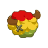
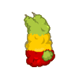
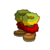
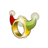
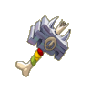

Menu barbok'you

| Niveau 47 | Coiffe du Boufcoul | ||
|---|---|---|---|
| Recettes : | Caractéristiques : | Conditions : | |
|  | 1 Coiffe du bouftou 30 Cuir de bouftou 30 Laine de bouftou 3 laine de boufcool 2 Cuir de Boufcool |
+26 à 40 agilité +26 à 40 chance +4 à 5 résistance feu +4 à 5 résistance terre |
aucune |
| Remarques : | |||
| les boufcools se trouvent dans le donjon koulosse | |||
| Niveau 55 | Cape du Boufcoul | ||
|---|---|---|---|
| Recettes : | Caractéristiques : | Conditions : | |
|  | 1 Cape bouffante 30 laine bouftou 30 Cuir bouftou 5 Etoffe de Dok Alako 2 Laine de boufcool 1 cuir de boufcool |
+31 à 50 vitalité +3 à 4 soins +201 à 300 initiative |
aucune |
| Remarques : | |||
| les boufcools se trouvent dans le donjon koulosse | |||
| Niveau 38 | Bottes du Boufcoul | ||
|---|---|---|---|
| Recettes : | Caractéristiques : | Conditions : | |
|  | 1 Boufbottes 20 Laine de bouftou 20 Cuir bouftou 2 Laine de boufcool 1 Cuir de boufcool |
+26 à 40 vitalité +6 à 20% dommages +4 à 5 résistance neutre |
aucune |
| Remarques : | |||
| les boufcools se trouvent dans le donjon koulosse | |||
| Niveau 38 | Anneau du Boufcoul | ||
|---|---|---|---|
| Recettes : | Caractéristiques : | Conditions : | |
|  | 10 Feuille de Kaliptus 10 Corne bouftou 5 Corne boufcool 1 Anneau de Bouze le clerc 1 dent de dragodinde |
+21 à 30 vitalité +4 à 5 résistance feu +4 à 5 résistance terre |
aucune |
| Remarques : | |||
| les boufcools se trouvent dans le donjon koulosse | |||
| Niveau 20 | Amulette du Boufcoul | ||
|---|---|---|---|
| Recettes : | Caractéristiques : | Conditions : | |
| 5 Corne de Boufcool 1 Amulette du bouftou 10 Corne de bouftou |
+11 à 15 agilité +11 à 15 chance |
aucune | |
| Remarques : | |||
| les boufcools se trouvent dans le donjon koulosse | |||
| Niveau 37 | Ceinture du Boufcoul | ||
|---|---|---|---|
| Recettes : | Caractéristiques : | Conditions : | |
| 1 Ceinture du bouftou 20 Laine de bouftou 20 Cuir de bouftou 2 Laine boufcool 2 cuir boufcool |
+11 à 15 agilité +11 à 15 chance +111 à 500 pods +2 à 3 CC |
aucune | |
| Remarques : | |||
| les boufcools se trouvent dans le donjon koulosse | |||
| Niveau 41 | Marteau du Boufcoul | |||
|---|---|---|---|---|
| Recettes : | Effets : | Caractéristiques : | Conditions : | |
|  | 5 Cornes du bouftou 2 Cornes de boufcool 2 Dents de serpentin 1 Bois de kaliptus 1 Marteau du bouftou |
Dom : 5 à 12 (air) Dom : 5 à 12 (eau) +1 créature invocable +4 à 5 résistance air +4 à 5 résistance eau |
PA : 5 Portée : 1 à 1 Bonus CC : +5 Critique : 1/40 Echec : 1/40 |
aucune |
| Remarques : | ||||
| les boufcools se trouvent dans le donjon koulosse | ||||
| 1 Items | Aucun bonus |
|---|---|
| 2 Items | +5 agilité / +5 Chance |
| 3 Items | +10 agilité / +10 Chance |
| 4 Items | +20 agilité / +20 Chance / +2 Dommages |
| 5 Items | +30 Agilité / +30 Chance / +3 Dommages |
| 6 Items | +40 Agilité / +40 Chance / +4 Dommages |
| 7 Items | +70 Agilité / +70 Chance / +7 Dommages / +30 Sagesse / + 1 PA |
| Bonus de la panoplie complète |
|---|
| +1 PA +118 à 140 agilité +118 à 140 chance +128 à 170 vitalité +8 à 10 résistance feu +8 à 10 résistance terre +6 à 20% dommages +4 à 5 résistance neutre +3 à 4 soins +201 à 300 initiative +2 à 3 CC +101 à 500 pods +1 créature invocable +4 à 5 résistance air +4 à 5 résistance eau +7 dommages +30 sagesse |
Dofus est un MMORPG édité par Ankama." Barbok " est un site non-officiel sans aucun lien avec Ankama.
Toutes les illustrations sont la propriété d'Ankama Studio et de Dofus. Le contenu de ce site a été rédigé initialement par Immortal, il ne s'agit que d'une remise en ligne effectuée par Eternal Games.